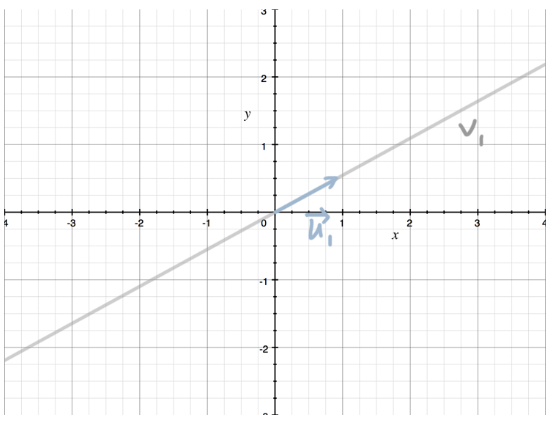
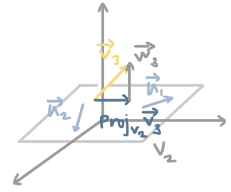

Linear Algebra, King Pt. 6
Orthonormal Bases and Gram-Schmidt
Orthonormal Bases
$B = \{ \overrightarrow{v_1}, \overrightarrow{v_2}, \overrightarrow{v_3} \}$ is the orthonormal basis for $V$ if each vector $\overrightarrow{v}$ in the set has length $1$, and if each vector in the set $\overrightarrow{v}$ is orthogonal to every other vector in the set $\overrightarrow{v_j}$, then $\overrightarrow{v_i} \cdot \overrightarrow{v_j} = 0$ for $i \neq j$.
If a set of vectors is orthonormal, then all of the vectors in the set are linearly independent.
Example:
Verify that the vector set $V = \{ \overrightarrow{v_1}, \overrightarrow{v_2} \}$ is an orthonormal set, if $\overrightarrow{v_1} = (0,0,1)$ and $\overrightarrow{v_2} = (0,1,0)$.
Both vectors have length $1$.
$||v_1||^2 = \overrightarrow{v_1} \cdot \overrightarrow{v_1} = 0(0) + 0(0) + 1(1) = 1$
$||v_2||^2 = \overrightarrow{v_2} \cdot \overrightarrow{v_2} = 0(0) + 1(1) + 0(0) = 1$
Now we'll confirm that the vectors are orthogonal.
$\overrightarrow{v_1} \cdot \overrightarrow{v_2} = 0(0) + 0(1) + 1(0) = 0$
An orthogonal matrix is a square matrix whose columns form an orthonormal set of vectors. If a matrix is rectangular, but its columns still form an orthonormal set of vectors, we call it an orthonormal matrix.
When a matrix is orthogonal, we know that its transpose is the same as its inverse, so:
$A^T = A^{-1}$
Using an orthonormal basis simplifies many of the operations and formulas. If the column vectors $v_1, v_2, v_3$ in:
$ \begin{bmatrix} \vdots & \vdots & \vdots \\ v_1 & v_2 & v_3 \\ \vdots & \vdots & \vdots \\ \end{bmatrix} [\overrightarrow{x}]_B = \begin{bmatrix} x_1 \\ x_2 \\ x_3 \\ \end{bmatrix} $
form an orthonormal set, then the matrix problem simplifies to a dot product problem. The equation becomes:
$ [\overrightarrow{x}]_B = \begin{bmatrix} v_1 \cdot \overrightarrow{x} \\ v_2 \cdot \overrightarrow{x} \\ v_3 \cdot \overrightarrow{x} \\ \end{bmatrix} $
Projection Onto an Orthonormal Basis
Finding the projection of a vector onto a subspace is also much easier when the subspace is defined by an orthonormal basis. We defined the projection of a vector $\overrightarrow{x}$ onto a subspace $V$ as:
$Proj_V \overrightarrow{x} = A(A^TA)^{-1} A^T \overrightarrow{x}$
where $A$ is the matrix made from column vectors that define $V$. But if we can define the subspace $V$ with an orthonormal basis, the projection can be simplified to:
$Proj_V \overrightarrow{x} = AA^T \overrightarrow{x}$
This is because $(A^TA)^{-1}$ simplifies to the identity matrix when $A$ is made of orthonormal column vectors.
Example:
Find the projection of $\overrightarrow{x} = (5,6,-1)$ onto subspace $V$.
$ V = span \left( \begin{bmatrix} \frac{1}{\sqrt{2}} \\ 0 \\ - \frac{1}{\sqrt{2}} \\ \end{bmatrix} , \begin{bmatrix} \frac{1}{2} \\ \frac{\sqrt{2}}{2} \\ \frac{1}{2} \\ \end{bmatrix} \right) $
$V = {v_1, v_2}$ is an orthonormal vector set, so the projection of $\overrightarrow{x} = (5,6,-1)$ onto $V$ is:
$Proj_V \overrightarrow{x} = AA^T \overrightarrow{x}$
$ Proj_V \overrightarrow{x} = \begin{bmatrix} \frac{1}{\sqrt{2}} & \frac{1}{2} \\ 0 & \frac{\sqrt{2}}{2} \\ -\frac{1}{\sqrt{2}} & \frac{1}{2} \\ \end{bmatrix} \begin{bmatrix} \frac{1}{\sqrt{2}} & 0 & -\frac{1}{\sqrt{2}} \\ \frac{1}{2} & \frac{\sqrt{2}}{2} & \frac{1}{2} \\ \end{bmatrix} \begin{bmatrix} 5 \\ 6 \\ -1 \\ \end{bmatrix} $
$ Proj_V \overrightarrow{x} = \begin{bmatrix} \frac{1}{2} + \frac{1}{4} & 0 + \frac{\sqrt{2}}{4} & -\frac{1}{2} + \frac{1}{4} \\ 0 + \frac{\sqrt{2}}{4} & 0 + \frac{1}{2} & 0 + \frac{\sqrt{2}}{4} \\ -\frac{1}{2} + \frac{1}{4} & 0 + \frac{\sqrt{2}}{4} & \frac{1}{2} + \frac{1}{4} \\ \end{bmatrix} $
$ Proj_V \overrightarrow{x} = \begin{bmatrix} \frac{3}{4} & \frac{\sqrt{2}}{4} & -\frac{1}{4} \\ \frac{\sqrt{2}}{4} & \frac{1}{2} & \frac{\sqrt{2}}{4} \\ -\frac{1}{4} & \frac{\sqrt{2}}{4} & \frac{3}{4} \\ \end{bmatrix} \begin{bmatrix} 5 \\ 6 \\ -1 \\ \end{bmatrix} $
$ Proj_V \overrightarrow{x} = \begin{bmatrix} \frac{3}{4}(5) + \frac{\sqrt{2}}{4} - \frac{1}{4}(-1) \\ \frac{\sqrt{2}}{4}(5) + \frac{1}{2}(6) + \frac{\sqrt{2}}{4}(-1) \\ -\frac{1}{4}(5) + \frac{\sqrt{2}}{4}(6) + \frac{3}{4}(-1) \\ \end{bmatrix} $
$ Proj_V \overrightarrow{x} = \begin{bmatrix} \frac{15}{4} + \frac{3 \sqrt{2}}{2} + \frac{1}{4} \\ \frac{5 \sqrt{2}}{4} + 3 - \frac{\sqrt{2}}{4} \\ -\frac{5}{4} + \frac{3 \sqrt{2}}{2} - \frac{3}{4} \\ \end{bmatrix} $
$ Proj_V \overrightarrow{x} = \begin{bmatrix} 4 + \frac{3 \sqrt{2}}{2} \\ 3 + \sqrt{2} \\ -2 + \frac{3 \sqrt{2}}{2} \\ \end{bmatrix} $
Gram-Schmidt Process for Change of Basis
The Gram-Schmidt process turns the basis of a subspace into an orthonormal basis for the same subspace, making other tasks easier.
Let's say that a non-orthonormal basis of the subspace $V$ is given by $\overrightarrow{v_1}, \overrightarrow{v_2}, \overrightarrow{v_3}$. In other words,
$V = span(\overrightarrow{v_1}, \overrightarrow{v_2}, \overrightarrow{v_3})$
The first step is to normalize $\overrightarrow{v_1}$.
$u_1 = \frac{v_1}{ || \overrightarrow{v} || }$
Then the basis of $V$ can be formed by $\overrightarrow{u_1}$, $\overrightarrow{v_2}$, and $\overrightarrow{v_3}$.
$V = span(\overrightarrow{u_1}, \overrightarrow{v_2}, \overrightarrow{v_3})$
The next step is to replace $\overrightarrow{v_2}$ with a vector that's both orthogonal to $u_1$ and normal. We need to think about the span of just $\overrightarrow{u_1}$, which we'll call $v_1$.

Imagine $\overrightarrow{v_2}$ is another vector. We could sketch the projection of $\overrightarrow{v_2}$ onto $\overrightarrow{v_1}$, $Proj_{v_1} \overrightarrow{v_2}$. Then $\overrightarrow{w}$ is the vector that connects $Proj_{v_1} to \overrightarrow{v_2}$, so $\overrightarrow{w_2} = \overrightarrow{v_2} - Proj_{v_1} \overrightarrow{v_2}$.

$\overrightarrow{w_2}$ is orthogonal to $\overrightarrow{u_1}$, and $v_1$ is an orthonormal subspace. Since there is only one vector $\overrightarrow{u_1}$ that forms the basis for $v_1$, every vector in the basis is orthogonal to every other vector (because there are no other vectors), and $\overrightarrow{u_1}$ is normal, so the basis of $V$ is orthonormal. We could rewrite the projection $Proj_{v_1} \overrightarrow{v_2}$ as:
$\overrightarrow{w_2} = \overrightarrow{v_2} - (\overrightarrow{v_2} \cdot \overrightarrow{u_1}) \overrightarrow{u_1}$
This will give us a vector $\overrightarrow{w_2}$ that we can use in place of $\overrightarrow{v_2}$. Once we normalize $\overrightarrow{w_2}$, we'll call it $\overrightarrow{u_2}$, and be able to say that the basis of $V$ can be formed by $\overrightarrow{u_1}$, $\overrightarrow{u_2}$, and $\overrightarrow{v_3}$.
$V = span(\overrightarrow{u_1}, \overrightarrow{u_2}, \overrightarrow{v_3})$
Then keep repeating this process for each basis vector. For the last basis vector $\overrightarrow{v_3}$, we'd think about the span of $\overrightarrow{u_1}$ and $\overrightarrow{u_2}$, which we'll call $v_2$. The subspace $V_2$ will be a plane, whereas the subspace $V_1$ was a line.
Example:
The subspace of $V$ is a plane in $\mathbb{R}^3$. Use a Gram-Schmidt process to change the basis of $V$ into an orthonormal basis.
$ V = span \left( \begin{bmatrix} 1 \\ 2 \\ 0 \\ \end{bmatrix} , \begin{bmatrix} -2 \\ 1 \\ -5 \\ \end{bmatrix} \right) $
$\overrightarrow{v_1} = (1,2,0)$
$\overrightarrow{v_2} = (-2,1,-5)$
$V = span(\overrightarrow{v_1}, \overrightarrow{v_2})$
We'll start by normalizing $\overrightarrow{v_1}$.
$|| \overrightarrow{v_1} || = \sqrt{1^2 + 2^2 + 0^2} = \sqrt{1+4+0} = \sqrt{5}$
If $\overrightarrow{u_1}$ is the normalized version of $\overrightarrow{v_1}$, we can say:
$ \overrightarrow{u_1} = \frac{1}{\sqrt{5}} \begin{bmatrix} 1 \\ 2 \\ 0 \\ \end{bmatrix} $
$V = span(\overrightarrow{u_1}, \overrightarrow{v_2})$
Now we need to replace $\overrightarrow{v_2}$ with a vector that's both orthogonal to $\overrightarrow{u_1}$ and normal. Then the vector set that spans $V$ will be orthonormal. We'll name $\overrightarrow{w_2}$ as the vector that connects $Proj_{v_1} \overrightarrow{v_2}$.
$\overrightarrow{w_2} = \overrightarrow{v_2} - Proj_{v_1} \overrightarrow{v_2}$
$\overrightarrow{w_2} = \overrightarrow{v_2} - (\overrightarrow{v_2} \cdot \overrightarrow{u_1}) \overrightarrow{v_2}{u_1}$
Plug in the values we already have.
$ \overrightarrow{w_2} = \begin{bmatrix} -2 \\ 1 \\ 5 \\ \end{bmatrix} - \left( \begin{bmatrix} -2 \\ 1 \\ 5 \\ \end{bmatrix} \cdot \frac{1}{\sqrt{5}} \begin{bmatrix} 1 \\ 2 \\ 0 \\ \end{bmatrix} \right) \frac{1}{\sqrt{5}} \begin{bmatrix} 1 \\ 2 \\ 0 \\ \end{bmatrix} $
$ \overrightarrow{w_2} = \begin{bmatrix} -2 \\ 1 \\ 5 \\ \end{bmatrix} - \frac{1}{5} \left( \begin{bmatrix} -2 \\ 1 \\ 5 \\ \end{bmatrix} \cdot \begin{bmatrix} 1 \\ 2 \\ 0 \\ \end{bmatrix} \right) \begin{bmatrix} 1 \\ 2 \\ 0 \\ \end{bmatrix} $
$ \overrightarrow{w_2} = \begin{bmatrix} -2 \\ 1 \\ 5 \\ \end{bmatrix} - \frac{1}{5} (-2(1) + 1(2) - 5(0)) \begin{bmatrix} 1 \\ 2 \\ 0 \\ \end{bmatrix} $
$ \overrightarrow{w_2} = \begin{bmatrix} -2 \\ 1 \\ 5 \\ \end{bmatrix} - \frac{1}{5} (-2 + 2 - 0) \begin{bmatrix} 1 \\ 2 \\ 0 \\ \end{bmatrix} $
$ \overrightarrow{w_2} = \begin{bmatrix} -2 \\ 1 \\ 5 \\ \end{bmatrix} - \frac{1}{5} (0) \begin{bmatrix} 1 \\ 2 \\ 0 \\ \end{bmatrix} $
$ \overrightarrow{w_2} = \begin{bmatrix} -2 \\ 1 \\ 5 \\ \end{bmatrix} - 0 \begin{bmatrix} 1 \\ 2 \\ 0 \\ \end{bmatrix} $
$ \overrightarrow{w_2} = \begin{bmatrix} -2 \\ 1 \\ 5 \\ \end{bmatrix} $
The vector $\overrightarrow{w_2}$ is orthogonal to $\overrightarrow{u_1}$, but hasn't been normalized, so we'll normalize it. The length is:
$|| \overrightarrow{w_2} || = \sqrt{ (-2)^2 + (1)^2 + (-5)^2 }$
$|| \overrightarrow{w_2} || = \sqrt{4 + 1 + 25}$
$|| \overrightarrow{w_2} || = \sqrt{30}$
The normalized vector is:
$ \overrightarrow{u_2} = \frac{1}{\sqrt{30}} \begin{bmatrix} -2 \\ 1 \\ -5 \\ \end{bmatrix} $
Therefore, we can say that $\overrightarrow{u_1}$ and $\overrightarrow{u_2}$ form an orthonormal basis for $V$.
$ V = span \left( \frac{1}{\sqrt{5}} \begin{bmatrix} 1 \\ 2 \\ 0 \\ \end{bmatrix} \cdot \frac{1}{\sqrt{30}} \begin{bmatrix} -2 \\ 1 \\ -5 \\ \end{bmatrix} \right) $
$ V = span \left( \begin{bmatrix} \frac{1}{\sqrt{5}} \\ \frac{2}{\sqrt{5}} \\ 0 \\ \end{bmatrix} , \begin{bmatrix} -\frac{2}{\sqrt{30}} \frac{1}{\sqrt{30}} -\frac{5}{\sqrt{30}} \end{bmatrix} \right) $
Eigenvalues, Eigenvectors, and Eigenspaces
Any vector $\overrightarrow{v}$ that satisfies $T(\overrightarrow{v}) = \lambda \overrightarrow{v}$ is an eigenvector for the transformation $T$, and $\lambda$ is the eigenvalue that's associated. Because $\lambda$ is a constant, $T(\overrightarrow{v})$ is just a scaled version of $\overrightarrow{v}$.
Eigenvectors are the vectors that don't change direction when we apply the transformation matrix $T$; so if we apply $T$ to a vector $\overrightarrow{v}$, and the result $T(\overrightarrow{v})$ is parallel to to the original $\overrightarrow{v}$, then $\overrightarrow{v}$ is an eigenvector.
Identifying Eigenvectors
The way to identify an eigenvector is to compare the span of $\overrightarrow{v}$ with the span of $T(\overrightarrow{v})$. If under the transformation, the span remains the same, $\overrightarrow{v}$ is an eigenvector. $\overrightarrow{v}$ and $T(\overrightarrow{v})$ might be different lengths, but their spans are the same because they lie along the same line.
Finding Eigenvalues
There will be two eigenvectors when $A$ is $2 \times 2$, and $n$ eigenvectors when $A$ is $n \times n$. While $\overrightarrow{v} = \overrightarrow{O}$ would satisfy $A \overrightarrow{v} = \lambda \overrightarrow{V}$, it is a trivial solution, which does not allow us to find an associated eigenvalue.
$\overrightarrow{O} = \lambda \overrightarrow{v} - A \overrightarrow{v}$
$\overrightarrow{O} = \lambda I_n \overrightarrow{v} - A \overrightarrow{v}$
$(\lambda I_n - A) = \overrightarrow{O}$
This is a matrix-vector product set equal to the zero vector. Let's make a substitution $B = \lambda I_n - A$.
$B \overrightarrow{v} = \overrightarrow{O}$
We can see that any vector $\overrightarrow{v}$ that satisfies $B \overrightarrow{v} = \overrightarrow{O}$ will be in the null space of $B$, $N(B)$. When we know that there is a vector in the null space other than the zero vector, we conclude that the matrix $B = \lambda I_n - A$ has linearly dependent columns, that $B$ is not invertible, and that the determinant $|B|$ is zero.
We can express these rules:
- $A \overrightarrow{v} = \lambda \overrightarrow{v}$ for nonzero vectors $\overrightarrow{v}$ only if $|\lambda I_n - A| = 0$
- $\lambda$ is an eigenvalue of $A$ only if $|\lambda I_n - A| = 0$
Example:
Find the eigenvalue of the transformation matrix $A$.
$ A = \begin{bmatrix} 2 & 1 \\ 1 & 2 \\ \end{bmatrix} $
We need to find the determinant, $|\lambda I_n - A|$.
$ \left| \lambda \begin{bmatrix} 1 & 0 \\ 0 & 1 \\ \end{bmatrix} - \begin{bmatrix} 2 & 1 \\ 1 & 2 \\ \end{bmatrix} \right| $
$ \left| \begin{bmatrix} \lambda & 0 \\ 0 & \lambda \\ \end{bmatrix} - \begin{bmatrix} 2 & 1 \\ 1 & 2 \\ \end{bmatrix} \right| $
$ \left| \begin{bmatrix} \lambda-2 & 0-1 \\ -1 & \lambda-2 \\ \end{bmatrix} \right| $
$ \left| \begin{bmatrix} \lambda-2 & -1 \\ -1 & \lambda-2 \\ \end{bmatrix} \right| $
The determinant of this resulting matrix is:
$(\lambda - 2)(\lambda - 2) - (-1)(-1)$
$(\lambda - 2)(\lambda - 2) - 1$
$\lambda^2 - 4 \lambda + 4 - 1$
$\lambda^2 - 4 \lambda + 3$
This polynomial is called the characteristic polynomial. The equation we are trying to satisfy, $|\lambda I_n - A| = 0$, is called the characteristic equation.
To solve for $\lambda$, we'll always try factoring, but if the polynomial cannot be factored, we can either complete the square or use the quadratic formula.
$(\lambda - 3)(\lambda - 1) = 0$
$\lambda = 1 \text{ or } \lambda = 3$
The sum of eigenvalues will always equal the sum of the matrix entries that run down its diagonal, called the trace of the matrix. This means that once we find $n-1$ of the eigenvalues, we'll already have the $n^{th}$ eigenvalue.
Also, the determinant of $A$, $|A|$, will always be equal to the product of the eigenvalues.
Finding Eigenvectors
Once we've found the eigenvalues for the transformation matrix, we can begin finding the eigenvectors by defining an eigenspace for each eigenvalue of the matrix. The eigenspace $E_{\lambda}$ for a specific eigenvalue $\lambda$ is the set of all the eigenvectors $\overrightarrow{v}$ that satisfy $A \overrightarrow{v} = \lambda \overrightarrow{v}$ for that particular eigenvalue. The eigenspace is simply the null space of the matrix $\lambda I_n - A$.
$E_{\lambda} = N(\lambda I_n - A)$
To find the matrix $\lambda I_n - A$, we can simply plug the eigenvalue into the value we found earlier for $\lambda I_n - A$.
Example:
Continuing with the previous example, find the eigenvectors associated with eigenvalues $\lambda=1$ and $\lambda=3$.
$ A = \begin{bmatrix} 2 & 1 \\ 1 & 2 \\ \end{bmatrix} $
With
$ E_{\lambda} = N \left( \begin{bmatrix} \lambda-2 & -1 \\ -1 & \lambda-2 \\ \end{bmatrix} \right) $
we get:
$ E_1 = N \left( \begin{bmatrix} 1-2 & -1 \\ -1 & 1-2 \\ \end{bmatrix} \right) $
$ E_1 = N \left( \begin{bmatrix} -1 & -1 \\ -1 & -1 \\ \end{bmatrix} \right) $
and
$ E_3 = N \left( \begin{bmatrix} 3-2 & -1 \\ -1 & 3-2 \\ \end{bmatrix} \right) $
$ E_3 = N \left( \begin{bmatrix} 1 & -1 \\ -1 & 1 \\ \end{bmatrix} \right) $
Therefore, the eigenvectors in the eigenspace $E_1$ will satisfy:
$ \begin{bmatrix} -1 & -1 \\ -1 & -1 \\ \end{bmatrix} \overrightarrow{v} = \begin{bmatrix} 0 \\ 0 \\ \end{bmatrix} $
$ \begin{bmatrix} -1 & -1 & | & 0 \\ -1 & -1 & | & 0 \\ \end{bmatrix} $
$ \begin{bmatrix} 1 & 1 & | & 0 \\ -1 & -1 & | & 0 \\ \end{bmatrix} $
$ \begin{bmatrix} 1 & 1 & | & 0 \\ 0 & 0 & | & 0 \\ \end{bmatrix} $
$ \begin{bmatrix} 1 & 1 \\ 0 & 0 \\ \end{bmatrix} \begin{bmatrix} v_1 \\ v_2 \\ \end{bmatrix} = \begin{bmatrix} 0 \\ 0 \\ \end{bmatrix} $
$v_1 + v_2 = 0$
$v_1 = -v_2$
So with $v_1 = -v_2$, we'll substitute $v_2 = t$, and say that:
$ \begin{bmatrix} v_1 \\ v_2 \\ \end{bmatrix} = t \begin{bmatrix} -1 \\ 1 \\ \end{bmatrix} $
which means that $E$ is defined by:
$ E_1 = span \left( \begin{bmatrix} -1 \\ 1 \\ \end{bmatrix} \right) $
And the eigenvectors in the eigenspace $E_3$ will satisfy:
$ \begin{bmatrix} 1 & -1 \\ -1 & 1 \\ \end{bmatrix} \overrightarrow{v} = \begin{bmatrix} 0 \\ 0 \\ \end{bmatrix} $
$ \begin{bmatrix} 1 & -1 & | & 0 \\ -1 & 1 & | & 0 \\ \end{bmatrix} $
$ \begin{bmatrix} 1 & -1 & | & 0 \\ 0 & 0 & | & 0 \\ \end{bmatrix} $
$ \begin{bmatrix} 1 & -1 & | & 0 \\ 0 & 0 & | & 0 \\ \end{bmatrix} \begin{bmatrix} v_1 \\ v_2 \\ \end{bmatrix} = \begin{bmatrix} 0 \\ 0 \\ \end{bmatrix} $
$v_1 - v_2 = 0$
$v_1 = v_2$
And with $v_1 = v_2$, we'll substitute $v_2 = t$ and say that:
$ \begin{bmatrix} v_1 \\ v_2 \\ \end{bmatrix} = t \begin{bmatrix} 1 \\ 1 \\ \end{bmatrix} $
which means that $E_3$ is defined by:
$ E_3 = span \left( \begin{bmatrix} 1 \\ 1 \\ \end{bmatrix} \right) $
Eigendecomposition in Three Dimensions
The process for finding the eigenvalues for a $3 \times 3$ matrix is the same as the process for a $2 \times 2$ matrix, however calculating the $3 \times 3$ determinant and factoring the third degree characteristic polynomial will be more complex than for a $2 \times 2$ matrix.
Example:
Find the eigenvalues and eigenvectors of the transformation matrix $A$.
$ A = \begin{bmatrix} -1 & 1 & 0 \\ 1 & 2 & 1 \\ 0 & 3 & -1 \\ \end{bmatrix} $
We need to find the determinant $|\lambda I_n A|$.
$ \left| \lambda \begin{bmatrix} 1 & 0 & 0 \\ 0 & 1 & 0 \\ 0 & 0 & 1 \\ \end{bmatrix} - \begin{bmatrix} -1 & 1 & 0 \\ 1 & 2 & 1 \\ 0 & 3 & -1 \\ \end{bmatrix} \right| $
$ \left| \begin{bmatrix} \lambda & 0 & 0 \\ 0 & \lambda & 0 \\ 0 & 0 & \lambda \\ \end{bmatrix} - \begin{bmatrix} -1 & 1 & 0 \\ 1 & 2 & 1 \\ 0 & 3 & -1 \\ \end{bmatrix} \right| $
$ \left| \begin{bmatrix} \lambda - (-1) & 0-1 & 0-0 \\ 0-1 & \lambda-2 & 0-1 \\ 0-0 & 0-3 & \lambda - (-1) \\ \end{bmatrix} \right| $
$ \left| \begin{bmatrix} \lambda + 1 & -1 & 0 \\ -1 & \lambda - 2 & -1 \\ 0 & -3 & \lambda + 1 \\ \end{bmatrix} \right| $
Then the determinant of the resulting matrix is:
$ (\lambda + 1) \begin{vmatrix} \lambda - 2 & -1 \\ -3 & \lambda + 1 \\ \end{vmatrix} - (-1) \begin{vmatrix} -1 & -1 \\ 0 & \lambda + 1 \\ \end{vmatrix} + 0 \begin{vmatrix} -1 & \lambda - 2 \\ 0 & -3 \\ \end{vmatrix} $
$(\lambda + 1) [(\lambda - 2)(\lambda + 1) - (-1)(-3)] - (-1)[(-1)(\lambda + 1) - (-1)(0)] + 0[(-1)(-3) - (\lambda - 2)(0)]$
$(\lambda + 1) [(\lambda - 2)(\lambda + 1) - 3] - (\lambda + 1)$
$(\lambda + 1)(\lambda^2 + \lambda - 2 \lambda - 2 - 3) - (\lambda + 1)$
$(\lambda + 1)(\lambda^2 - \lambda - 5) - (\lambda + 1)$
We can set this characteristic polynomial equal to $0$ to get the characteristic equation.
$(\lambda + 1)(\lambda^2 - \lambda - 5) - (\lambda + 1) = 0$
To solve for $\lambda$, we'll factor.
$(\lambda + 1) [(\lambda^2 - \lambda - 5)] = 0$
$(\lambda + 1)(\lambda^2 - \lambda - 5 - 1) = 0$
$(\lambda + 1)(\lambda^2 - \lambda - 6) = 0$
$(\lambda + 1)(\lambda - 3)(\lambda + 2) = 0$
$\lambda = -2 \text { or } \lambda = -1 \text{ or } \lambda = 3$
With these three eigenvalues, we'll have three eigenspaces, given by $E_{\lambda} = N(\lambda I_n - A)$.
Given:
$ E_{\lambda} = N \left( \begin{bmatrix} \lambda + 1 & -1 & 0 \\ -1 & \lambda-2 & -1 \\ 0 & -3 & \lambda + 1 \\ \end{bmatrix} \right) $
we get
$ E_{-2} = N \left( \begin{bmatrix} -2 + 1 & -1 & 0 \\ -1 & -2 - 2 & -1 \\ 0 & -3 & -2 + 1 \\ \end{bmatrix} \right) $
$ E_{-2} = N \left( \begin{bmatrix} -1 & -1 & 0 \\ -1 & -4 & -1 \\ 0 & -3 & -1 \\ \end{bmatrix} \right) $
and
$ E_{-1} = N \left( \begin{bmatrix} -1+1 & -1 & 0 \\ -1 & -1 - 2 & -1 \\ 0 & -3 & -1 + 1 \\ \end{bmatrix} \right) $
$ E_{-1} = N \left( \begin{bmatrix} 0 & -1 & 0 \\ -1 & -3 & -1 \\ 0 & -3 & 0 \\ \end{bmatrix} \right) $
and
$ E_3 = N \left( \begin{bmatrix} 3+1 & -1 & 0 \\ -1 & 3 - 2 & -1 \\ 0 & -3 & 3 + 1 \\ \end{bmatrix} \right) $
$ E_3 = N \left( \begin{bmatrix} 4 & -1 & 0 \\ -1 & 1 & -1 \\ 0 & -3 & 4 \\ \end{bmatrix} \right) $
Therefore, the eigenvectors in the eigenspace $E_{-2}$ will satisfy:
$ \begin{bmatrix} -1 & -1 & 0 \\ -1 & -4 & -1 \\ 0 & -3 & -1 \\ \end{bmatrix} \overrightarrow{x} = \begin{bmatrix} 0 \\ 0 \\ 0 \\ \end{bmatrix} $
$ \begin{bmatrix} -1 & -1 & 0 & | & 0 \\ -1 & -4 & -1 & | & 0 \\ 0 & -3 & -1 & | & 0 \\ \end{bmatrix} \to \begin{bmatrix} 1 & 1 & 0 & | & 0 \\ -1 & -4 & -1 & | & 0 \\ 0 & -3 & -1 & | 0 \\ \end{bmatrix} \to \begin{bmatrix} 1 & 1 & 0 & | & 0 \\ 0 & -3 & -1 & | & 0 \\ 0 & -3 & -1 & | & 0 \\ \end{bmatrix} $
$ \begin{bmatrix} 1 & 1 & 0 & | & 0 \\ 0 & -3 & -1 & | & 0 \\ 0 & 0 & 0 & | & 0 \\ \end{bmatrix} \to \begin{bmatrix} 1 & 1 & 0 & | & 0 \\ 0 & 1 & \frac{1}{3} & | & 0 \\ 0 & 0 & 0 & | & 0 \\ \end{bmatrix} \to \begin{bmatrix} 1 & 0 & -\frac{1}{3} & | & 0 \\ 0 & 1 & \frac{1}{3} & | & 0 \\ 0 & 0 & 0 & | & 0 \\ \end{bmatrix} $
This gives:
$v_1 - \frac{1}{3}v_3 = 0$
$v_2 + \frac{1}{3} = 0$
or
$v_1 = \frac{1}{3}v_3$
$v_2 = - \frac{1}{3}v_3$
So we can say:
$ \begin{bmatrix} v_1 \\ v_2 \\ v_3 \\ \end{bmatrix} = v_3 \begin{bmatrix} \frac{1}{3} \\ -\frac{1}{3} \\ 1 \\ \end{bmatrix} $
which means that $E_{-2}$ is defined by:
$ E_{-2} = span \left( \begin{bmatrix} \frac{1}{3} \\ -\frac{1}{3} \\ 1 \\ \end{bmatrix} \right) $
and the eigenvectors in the eigenspace $E_{-1}$ will satisfy:
$ \begin{bmatrix} 0 & -1 & 0 \\ -1 & -3 & -1 \\ 0 & 3 & 0 \\ \end{bmatrix} \overrightarrow{v} = \begin{bmatrix} 0 \\ 0 \\ 0 \\ \end{bmatrix} $
$ \begin{bmatrix} 0 & -1 & 0 & | & 0 \\ -1 & -3 & -1 & | & 0 \\ 0 & -3 & 0 & | & 0 \\ \end{bmatrix} \to \begin{bmatrix} -1 & -3 & -1 & | & 0 \\ 0 & -1 & 0 & | & 0 \\ 0 & -3 & 0 & | & 0 \\ \end{bmatrix} \to \begin{bmatrix} 1 & 3 & 1 & | & 0 \\ 0 & -1 & 0 & | & 0 \\ 0 & -3 & 0 & | & 0 \\ \end{bmatrix} $
$ \begin{bmatrix} 1 & 3 & 1 & | & 0 \\ 0 & 1 & 0 & | & 0 \\ 0 & -3 & 0 & | & 0 \\ \end{bmatrix} \to \begin{bmatrix} 1 & 0 & 1 & | & 0 \\ 0 & 1 & 0 & | & 0 \\ 0 & -3 & 0 & | & 0 \\ \end{bmatrix} \to \begin{bmatrix} 1 & 0 & 1 & | & 0 \\ 0 & 1 & 0 & | & 0 \\ 0 & 0 & 0 & | & 0 \\ \end{bmatrix} $
That gives:
$v_1 + v_3 = 0$
$v_2 = 0$
or
$v_1 = -v_3$
$v_2 = 0$
So we can say:
$ \begin{bmatrix} v_1 \\ v_2 \\ v_3 \\ \end{bmatrix} = v_3 \begin{bmatrix} -1 \\ 0 \\ 1 \\ \end{bmatrix} $
which means that $E_{-1}$ is defined by:
$ E_{-1} = span \left( \begin{bmatrix} -1 \\ 0 \\ 1 \\ \end{bmatrix} \right) $
And the eigenvectors in the eigenspace $E_3$ will satisfy:
$ \begin{bmatrix} 4 & -1 & 0 \\ -1 & 1 & -1 \\ 0 & -3 & 4 \\ \end{bmatrix} \overrightarrow{v} = \begin{bmatrix} 0 \\ 0 \\ 0 \\ \end{bmatrix} $
$ \begin{bmatrix} 4 & -1 & 0 & | & 0 \\ -1 & 1 & -1 & | & 0 \\ 0 & -3 & 4 & | & 0 \\ \end{bmatrix} \to \begin{bmatrix} -1 & 1 & -1 & | & 0 \\ 4 & -1 & 0 & | & 0 \\ 0 & -3 & 4 & | & 0 \\ \end{bmatrix} \to \begin{bmatrix} 1 & -1 & 1 & | & 0 \\ 4 & -1 & 0 & | & 0 \\ 0 & -3 & 4 & | & 0 \\ \end{bmatrix} $
$ \begin{bmatrix} 1 & -1 & 1 & | & 0 \\ 0 & 3 & -4 & | & 0 \\ 0 & -3 & 4 & | & 0 \\ \end{bmatrix} \to \begin{bmatrix} 1 & -1 & 1 & | & 0 \\ 0 & 3 & -4 & | & 0 \\ 0 & 0 & 0 & | & 0 \\ \end{bmatrix} \to \begin{bmatrix} 1 & -1 & 1 & | & 0 \\ 0 & 1 & -\frac{4}{3} & | & 0 \\ 0 & 0 & 0 & | & 0 \\ \end{bmatrix} $
$ \begin{bmatrix} 1 & 0 & -\frac{1}{3} & | & 0 \\ 0 & 1 & -\frac{4}{3} & | & 0 \\ 0 & 0 & 0 & | & 0 \\ \end{bmatrix} $
This gives:
$v_1 - \frac{1}{3}v_3 = 0$
$v_2 - \frac{4}{3}v_3 = 0$
or
So we can say:
$ \begin{bmatrix} v_1 \\ v_2 \\ v_3 \\ \end{bmatrix} = v_3 \begin{bmatrix} \frac{1}{3} \\ \frac{4}{3} \\ 1 \\ \end{bmatrix} $
which means that $E_3$ is defined by:
$ E_3 = span \left( \begin{bmatrix} \frac{1}{3} \\ \frac{4}{3} \\ 1 \\ \end{bmatrix} \right) $
Putting these together, for eigenvalues $\lambda = -2$, $\lambda = -1$, and $\lambda = 3$, we get:
$ E_{-2} = span \left( \begin{bmatrix} \frac{1}{3} \\ -\frac{1}{3} \\ 1 \\ \end{bmatrix} \right) , E_{-1} = span \left( \begin{bmatrix} -1 \\ 0 \\ 1 \\ \end{bmatrix} \right) , E_3 = span \left( \begin{bmatrix} \frac{1}{3} \\ \frac{4}{3} \\ 1 \\ \end{bmatrix} \right) $